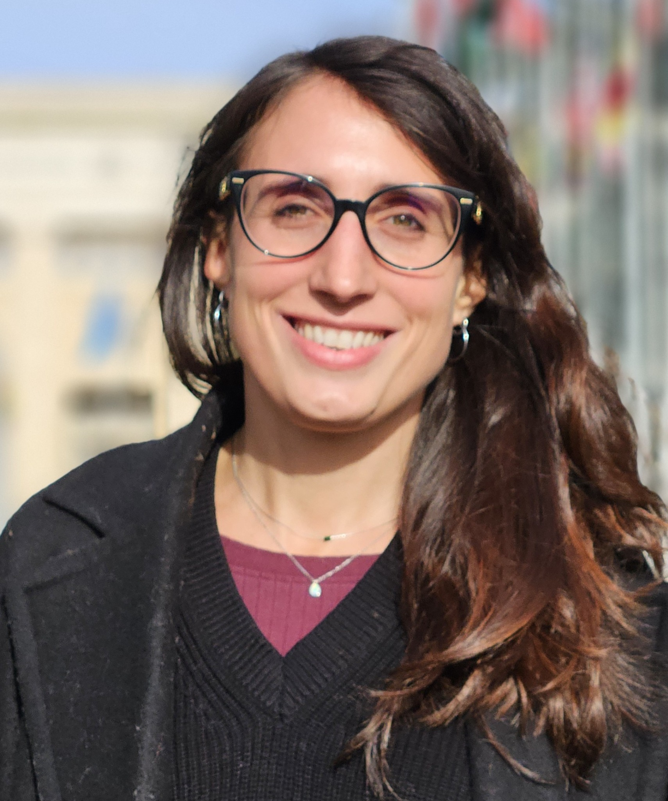
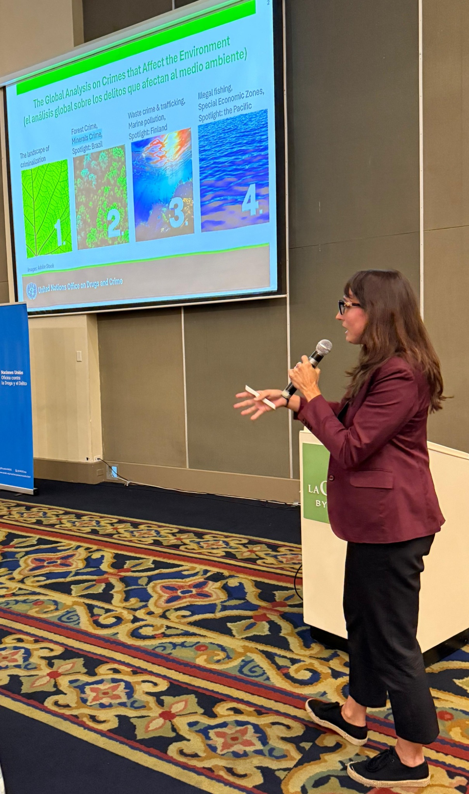

Claudia Carpanese
Social scientist researching mining & critical minerals for the energy transition, with experience in policy research at the United Nations
Department of Geography and Regional Science
University of Graz
About me
I am an enthusiastic researcher, pursuing an interdisciplinary PhD programme in applied human-environment research at the Department of Geography and Regional Science at the University of Graz, where I am part of the working group INTEGRATIVES, Applied Integrative Geography.
My research explores mineral exploration in Austria in the context of the energy transition, examining how different actors shape decisions about potential mining futures. I also work on the communication project Beyond Hot Air, which brings people into conversation around critical raw materials supply for the ‘green’ transition.
My experience spans fieldwork on lithium in Bolivia and policy research at the United Nations Office on Drugs and Crime (UNODC), where I focused on illegal mining and crimes that affect the environment, particularly within critical mineral supply chains. These experiences inform my interest in transparency, accountability, and the social and environmental dimensions of resource governance.
Alongside my research, I am an experienced trainer and coach, having designed and facilitated training for staff and managers across several countries through my work at UNOV/UNODC, focusing on conflict resolution, effective communication, diversity and inclusion, and respectful workplaces. Across these roles, I aim to connect research, policy and dialogue to contribute to a more just and sustainable society.
